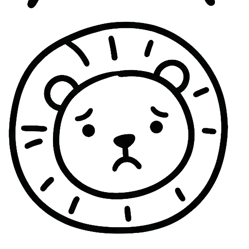
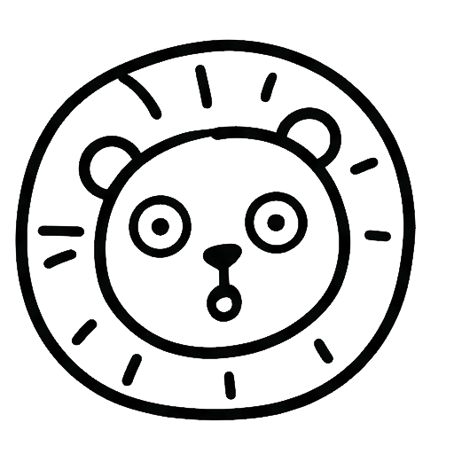

01
서울 첫집 생존게임
1억
현금 1억 + 대출
노도강 가능할까?
노원·도봉·강북 후보지 보드
1억 들고
계산해봤어

국토부 실거래가 · 금융위원회 가계부채 관리 강화 방안 · 단순 시뮬레이션
02
게임 규칙
집값 70%는 대출
나머지는 내 돈
실제 한도는 DSR·소득·은행 심사에 따라 달라질 수 있어
최대치로 잡아도
이 정도야

국토부 실거래가 · 금융위원회 가계부채 관리 강화 방안 · 단순 시뮬레이션
03
2025 후보지 보드
1억 들고 들어가도
이미 부족했어
처음부터 쉬운 게임은
아니었어

국토부 실거래가 · 금융위원회 가계부채 관리 강화 방안 · 단순 시뮬레이션
04
2026 후보지 보드
올해는 벽이
더 높아졌어
후보지가 하나씩
멀어지는 느낌

국토부 실거래가 · 금융위원회 가계부채 관리 강화 방안 · 단순 시뮬레이션
05
도봉구
제일 가까워도
7,300만 부족
20255.57억
20265.76억
대출 가정4.03억
내 돈 필요1.73억
현금 1억이면 7,300만 부족
제일 가까워도
추가 현금이 필요해

국토부 실거래가 · 금융위원회 가계부채 관리 강화 방안 · 단순 시뮬레이션
06
노원구
1억 모았는데
1.04억 더 필요
20256.37억
20266.80억
대출 가정4.76억
내 돈 필요2.04억
현금 1억이면 1.04억 부족
1억 모았는데
1억이 더 필요해
국토부 실거래가 · 금융위원회 가계부채 관리 강화 방안 · 단순 시뮬레이션
07
강북구
여긴 6억 한도에
걸리는 가격대
20257.45억
20268.65억
대출 가정6억 한도
내 돈 필요2.65억
현금 1억이면 1.65억 부족
여긴 대출 한도도
같이 봐야해

국토부 실거래가 · 금융위원회 가계부채 관리 강화 방안 · 단순 시뮬레이션
08
첫집러 계산법
집값보다 먼저 볼 건
필요 현금
상승률보다 무서운 건
내 통장 기준으로
후보지가 빠지는 순간
몇 % 올랐냐보다
내 예산에서 빠졌냐야

국토부 실거래가 · 금융위원회 가계부채 관리 강화 방안 · 단순 시뮬레이션
09
노도강
이제 자동 선택지가
아니야
도봉도 부족
노원은 더 멀어짐
강북은 계산이 안 끝남
노도강도 이제
만만하지 않아
국토부 실거래가 · 금융위원회 가계부채 관리 강화 방안 · 단순 시뮬레이션
10
계산표
댓글에
엑셀/PDF
내 돈 1억 기준
노도강 후보지 보드
보내줄게
저장해두고
계산해봐

국토부 실거래가 · 금융위원회 가계부채 관리 강화 방안 · 단순 시뮬레이션